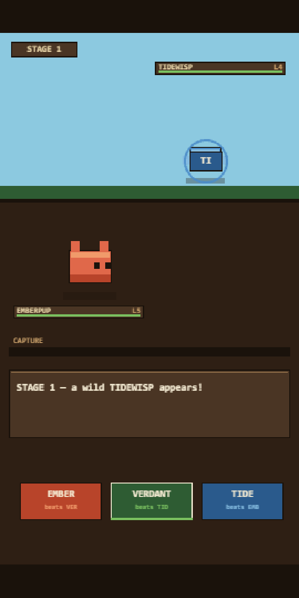

Actual gameplayRead the wind-up
Kinfold's battles fight themselves — the capture throw is the only thing you touch. Tell adds one more thing: every enemy attack telegraphs its element for about half a second before it lands, and you tap the element that beats it. Get it right and your Kinmon interposes, takes far less damage, and charges the capture meter.
Why it exists: the rule it questions (K-003) names its own risk out loud — “a battle you touch zero times is a screensaver and players skip it by day three”. Tell is built so that tapping wrong, or never tapping at all, resolves exactly as today's battle does. That optionality is the entire proposal, so the probe measures it rather than asserting it.
| Measurement | Result |
|---|---|
| Ladder cleared, never tapping | 6 / 60 |
| Ladder cleared, always tapping correctly | 47 / 60 |
| Average stages reached, never / always | 1.85 → 3.57 |
| Is answering ever worse than not answering? | No, by construction |